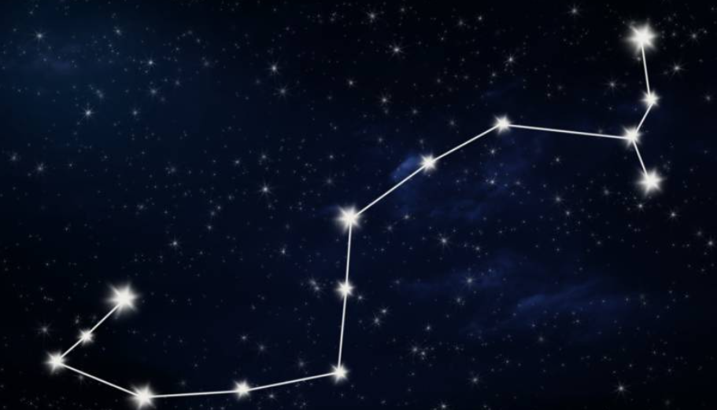
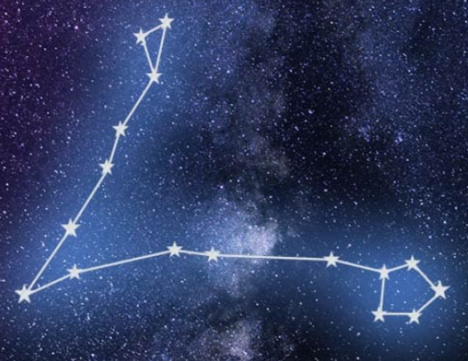

.png)
Stars
1. Aries (♈︎)
Aries appears in the night sky as a crooked line or bent triangle formed by its brightest stars, Hamal and Sheratan. It is best observed in the Northern Hemisphere during winter, particularly in December . In Greek mythology, Aries represents the magical golden ram, and its symbol (♈︎) reflects the horns of the animal. Across cultures, Aries is universally associated with courage, leadership, and new beginnings.
2. Taurus (♉︎)
Taurus appears in the night sky with its recognizable V-shaped star cluster (the Hyades) and the red giant star Aldebaran marking the bolls glowing eye . It is best observed in the Northern Celestial Hemisphere during winter, particularly in January . In Greek mythology, Taurus represents bull, and its symbol (♉︎). Across cultures, Taurus is universally associated with patience, stubborn determination, and steady loyalty.
3. Gemini (♊︎)
Gemini appears in two connected stich like figures in the night sky but its best identified by its two brightest stars, Pollux and Castor . It is best observed in the Northern Celestial Hemisphere during winter, particularly in February . In Greek mythology, Gemini represents the Twins, and its symbol (♊︎) that represents Castor and Pollux in Greek mythology. Across cultures, Gemini is universally associated with duality, communication and intellectual curiosity.
4. Cancer♋
Cancer appears as an inverted "Y" in the night sky with its most brightest star Beta Cancriits . It is best observed in the Northern Celestial Hemisphere during spring, particularly in March . In Greek mythology, Cancer represents the Crab, and its symbol ♋ that reflects a giant crab in Greek mythology. Across cultures, Cancer is universally associated with intuition, emotional depth, and nurture.
5. Leo (♌︎)
Leo which is recognizable due to its many bright stars and a distinctive shape that is reminiscent of the crouching lion it depicts. It is best observed in the Northern Celestial Hemisphere during spring, particularly in April . In Greek mythology, Leo represents the Nemean Lion, and its symbol (♌︎) that represents the fearsome lion that was slain by Hercules. Across cultures, Leo is universally associated with strength, courage, and leadership.
6. Virgo ♍
Virgo which is recognizable by finding its brightest star, Spica. It is best observed in the Northern Celestial Hemisphere during spring, particularly in May . In Greek mythology, Virgo represents the Maiden, and its symbol ♍ that represents a maiden holding a sheath of wheat. Across cultures, Virgo is universally associated with agriculture, fertility and justice.
7. Libra (♎︎)
.png)
Libra which in the sky looks like a weighing scale but is more recognizable by finding its brightest star, Zubeneschamali. It is best observed in the Southern Hemisphere and Zubuelgenubi during summer, particularly in June . In Greek mythology, Virgo represents the the Weighing Scales, and its symbol (♎︎) that represents the weighing scales held by the goddess of justice Astraea. Across cultures, Libra is universally associated with equilibrium, fairness and harmony.
8. Scorpio ♏

Scorpio which in the sky is easy make out a scorpion like tail, but its most prominent feature is the glowing red supergiant star, Antares, known as "the heart of the scorpion". It is best observed in the Southern Celestial Hemisphere and during summer, particularly in July . In Greek mythology, Scorpio represents the the Scorpion, and its symbol ♏ that represents a giant scorpion set by the Gaia to defeat the vain hunter Orion. Across cultures, Scorpio is universally associated with passion, intensity, transformation, endurance and resilience.
9. Sagittarius (♐︎)
Sagittarius which in the sky appears as a stick-figure archer drawing its bow, with the fainter stars providing the outline of the horse's body. Sagittarius famously points its arrow at the heart of Scorpius, represented by the reddish star , Antares. Another recognizable feature to look out for is "Teapot" asterism which point directly to the core of the Milky Way. It is best observed in the Southern Celestial Hemisphere and during summer, particularly in August . In Greek mythology, Sagittarius represents the Archer, and its symbol (♐︎) that represents a half-man half-horse drawing a bow and arrow, is credited as the inventor of archery itself. Across cultures, Sagittarius is universally associated with adventurous, philosophical, optimistic, and seekers of higher truth and freedom.
10. Capricorn(♑︎)
Sagittarius which in the sky appears as a slightly bent triangle, but its key features are its stars,Deneb Algedi, Dabih and Algedi, and Messier 30. It is best observed in the Southern Celestial Hemisphere and during autumn, particularly in September . In Greek mythology, Sagittarius represents The Sea Goat, and its symbol (♑︎) that reflects the god Pan transforming his lower half into a fish to escape The Monster Typhoon. Across cultures, Sagittarius is universally associated with adventurous, philosophical, optimistic, and seekers of higher truth and freedom.
11. Aquarius (♒︎)
Aquarius which in the sky appears as a Y-shaped asterism of four stars, forming the "Water Jar", but its key features are its stars,Beta Aquarii and Alpha Aquarii. It is best observed in the Northern Hemisphere during autumn, and Southern during spring, which is particularly in September . In Greek mythology, Aquarius represents The Water Bearer, and its symbol (♒︎) that reflects Ganymede, a beautiful Trojan prince abducted by Zeus to serve as the cupbearer to the gods on Mount Olympus. Across cultures, Aquarius is universally associated with humanitarianism, innovation and intellect.
12. Pisces (♓︎)

Pisces which in the sky appears as a v shape with a triangle and a polygon like shape at each end , but its key features are its brightest stars, Eta Piscium and a yellow giant located 294 light-years away. It is best observed in the Northern Celestial Hemisphere during autumn, particularly in November . In Greek mythology, Pisces represents The Fishes, and its symbol (♓︎) that reflects Aphrodite and her son Eros transforming into fish to escape The Monster Typhoon while being tied together with a cord so they wouldn't get seperated. Across cultures, Pisces is universally associated with creativity, intuition, and the collective subconsious .